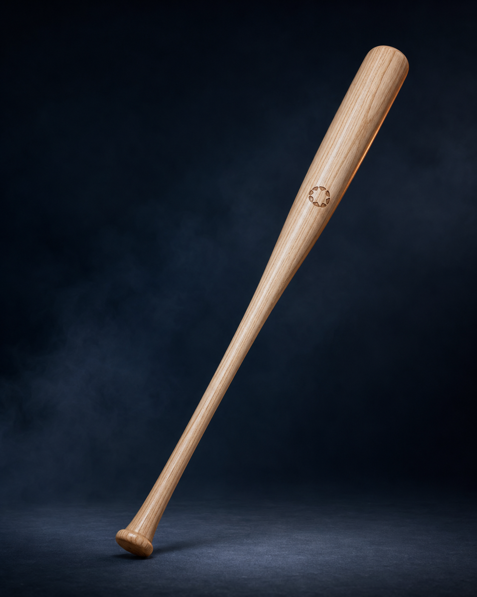
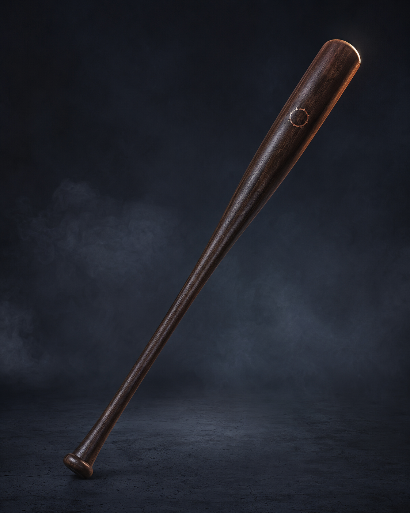
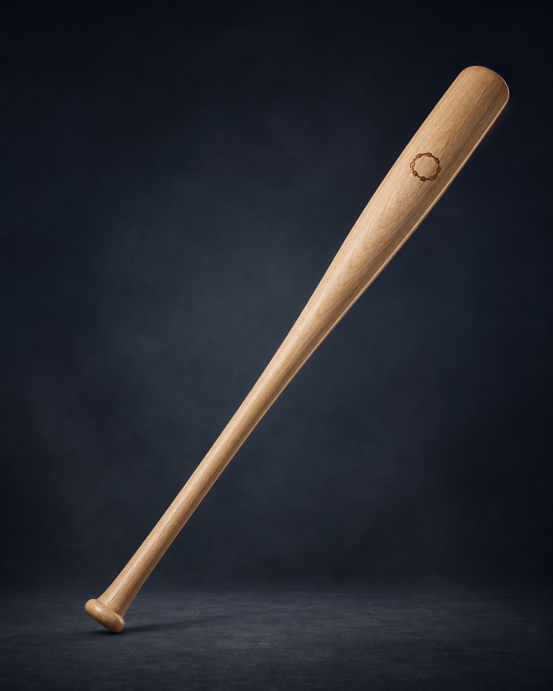
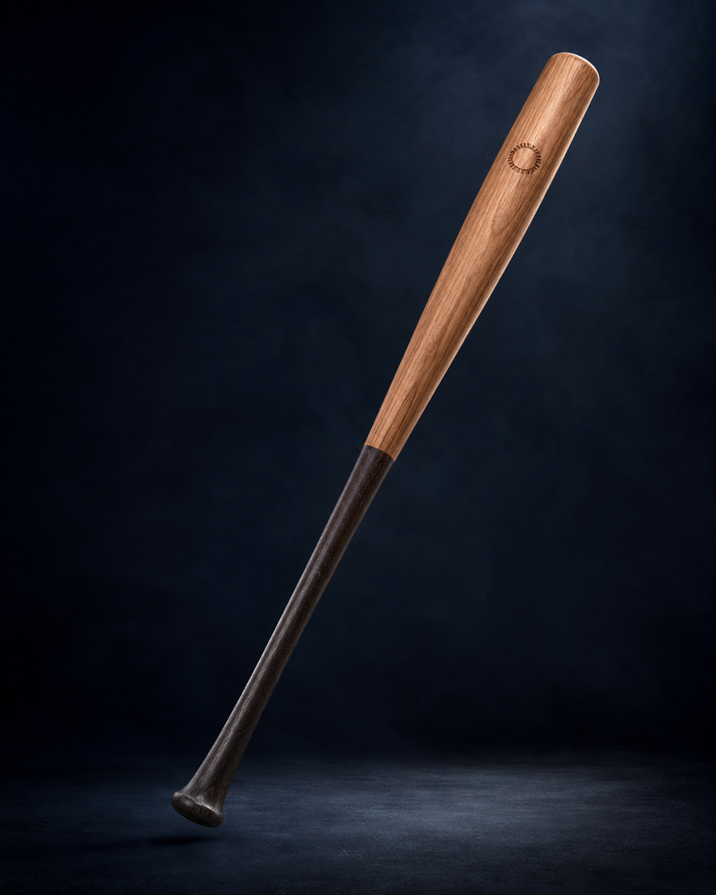
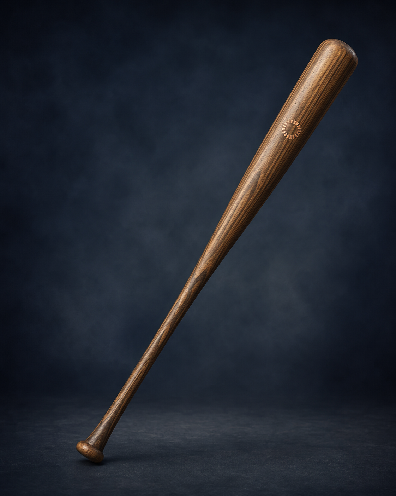
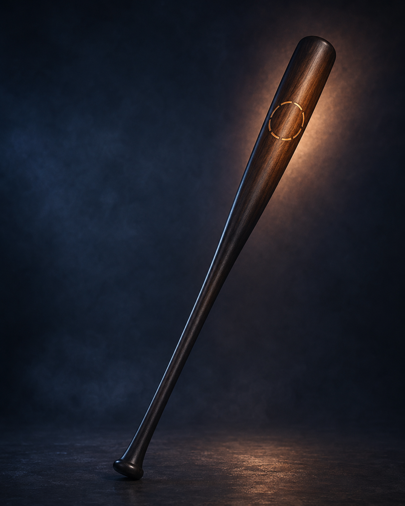

品牌起源 About
ORIGIN / 09九局之後，留下的是什麼？
品牌故事
棒球的歷史，從來不只寫在記分板上。 早期的球棒由工匠依照木材的密度、紋理與重量逐支製作。即使來自同一種木材，每一支球棒仍有不同的平衡、觸感與擊球聲。 那些差異無法完全複製，如同打者站上打擊區時，每一次判斷與揮擊都不會完全相同。 「第九」來自一場標準棒球比賽的九局。到了最後階段，戰術已經展開，體力開始下降，任何一次揮棒都可能決定比賽最後留下什麼結果。 「印記」則來自木材的年輪、工匠的烙印，以及打者長期使用後留下的痕跡。 它不是魔法，也不是預言，而是一個人經過準備、判斷與反覆練習後，留在球場上的證明。 第九印記製棒受到傳統製棒文化啟發，依照不同木材特性、重量分配與揮擊需求，設計出六種不同性格的球棒。 我們不製造能夠改變命運的球棒。 我們只試著製作一支，讓你在命運來臨時，能好好揮擊的球棒。
(品牌收尾語)第九局沒有真正的魔法。 只有準備、判斷，以及一點不願放棄的固執。
01｜第九局
最後階段的選擇
當比賽進入第九局，時間不再允許猶豫。真正重要的不是喊了什麼口號，而是你是否已經準備好。
02｜木材
無法完全複製的紋理
木材的密度、年輪與紋理各不相同。每一支木棒，都會保留材料原本的性格。
03｜印記
工匠與打者共同留下的痕跡
烙印標示球棒的出身，擊球痕跡則記錄它曾經經歷的打席。兩者共同構成一支球棒真正的印記。
球棒系列 Products
THE SIX MARKS
六種印記，六種揮擊方式
有人依靠速度，有人相信力量，也有人只想讓每一次揮擊更加穩定。 我們依照木材、棒型、重心與使用情境，設計六款不同定位的球棒。沒有絕對最強的一支，只有更適合你的選擇。

商品一｜迅羽 SWIFT FEATHER
採用彈性較佳的白蠟木，搭配較細握把與偏輕棒頭，降低揮棒時的負擔。適合重視揮棒速度、喜歡快速進入擊球區，或正在調整揮擊節奏的打者。 它不會讓快速球變慢，但能讓你的球棒早一點抵達。
- 速度型｜快速出棒
- 價格：NT$3,280

商品二｜沉星 FALLEN STAR
硬度較高的楓木結合較厚實的擊球部，將重心略微移向棒頭，提供紮實而直接的擊球回饋。適合已有穩定揮擊動作，能控制較高重量，並希望提升擊球動能的力量型打者。 請先確認自己能駕馭重量，再讓重量替你工作。
- 力量型｜棒頭偏重
- 價格：NT$4,680

商品三｜中軸 TRUE AXIS
使用兼具硬度與韌性的樺木，將重量平均分配於握把與棒頭之間，在速度、控制和擊球回饋之間取得平衡。 適合尚未完全確定個人棒型，或需要一支能應付多種打擊情境的打者。 它不替你決定風格，只提供足夠空間，讓你自己形成風格。
- 平衡型｜全能配置
- 價格：NT$3,980

商品四｜定界 BOUNDARY
透過加粗握把與較緊湊的擊球部，降低棒頭晃動感，讓打者更容易掌握揮擊軌跡。 適合重視選球、擊球方向與棒頭控制，不追求過度前端重量的打者。 它無法阻止你追打壞球，但至少不能再怪握把不合手。
- 控制型｜穩定握感
- 價格：NT$3,580

商品五｜初痕 FIRST MARK
以耐用的複合訓練材質製成，搭配中等重量、標準握把與均衡重心，讓初次使用木棒的打者更容易適應。 適合打擊練習、社團使用，以及正在建立基本揮擊動作的初學者。 它容許你犯一些錯誤。畢竟剛開始打球時，錯誤通常比安打更準時出現。
- 初學型｜第一支木棒
- 價格：NT$2,680

商品六｜第九式 THE NINTH
選用紋理筆直、密度均勻的硬質楓木，經過更細緻的重量與平衡配對，保留清楚、直接的擊球回饋。 適合擊球點穩定，對握把、棒頭重量與回饋感已有明確偏好的進階打者。 這不是最容易使用的一支，也不打算假裝自己是。
- 限定型｜精選木料
- 價格：NT$6,980
球棒重量與規格為選擇參考，實際手感仍會受到身高、力量、揮擊動作及個人習慣影響。
本產品無法代替打擊練習。很遺憾，目前沒有任何木材可以。
材質與性能比較
木材不會說話，但差異非常明顯
不同材質會影響球棒的硬度、彈性、耐用度與擊球回饋。 沒有任何材質在所有條件下都比較好。選擇的重點，是它是否符合你的經驗、力量與揮擊習慣。
- 硬度高，回饋直接。
- 楓木結構緊密、表面硬度較高，擊球時的回饋紮實直接。適合擊球點較穩定，並且能控制棒頭重量的打者。
-
性能 硬度： 高 彈性： 較低 耐用度： 中高 回饋感： 直接、扎實 適合對象： 力量型及進階打者
- 彈性明顯，揮擊感較輕快。
- 白蠟木具有較明顯的彈性，通常能提供較柔和的擊球感。適合重視揮棒速度、節奏與球棒回彈感的打者。
-
性能 硬度： 中等 彈性： 高 耐用度： 中等 回饋感： 柔和、有彈性 適合對象： 速度型及控制型打者
- 介於硬度與韌性之間。
- 樺木兼具一定硬度與韌性，使用一段時間後手感會逐漸形成。適合尋找平衡型配置，或想從訓練棒進入實木棒的打者。
-
性能 硬度： 中高 彈性： 中等 耐用度： 中高 回饋感： 均衡 適合對象： 全能型及成長中的打者
- 穩定、耐用，適合反覆練習。
- 複合材質著重耐用度與規格穩定性，適合大量打擊練習和初次接觸木棒的人。手感不完全等同天然實木，但能降低入門負擔。
-
性能 硬度： 中等 彈性： 中等 耐用度： 高 回饋感： 穩定 適合對象： 初學者及日常訓練
製棒工藝 Craft
THE MAKING OF A MARK一支球棒的印記，從木材開始
烙印是製作的最後一步，但在那之前，每支球棒都必須經過選材、車削、打磨與平衡檢查。 每一道程序都有可以測量的目的。烙印只是留下名字，不是魔法發生的那一步。
步驟一｜選材 SELECT
先理解木材，再決定它適合成為什麼。
檢查木材的紋理、密度、筆直程度與天然差異，依照材料特性安排適合的棒型。 不是每塊木材都適合成為力量型球棒。木材對職涯的選擇，有時比人類更務實。
步驟二｜車削 TURN
塑造握把、棒頸與擊球部比例。
依照各系列規格進行車削，控制握把粗細、擊球部尺寸與整體輪廓。 外型的每一次改變，都會影響重量分布與揮擊感。
步驟三｜平衡 BALANCE
重量不是只有多少，還包括它在哪裡。
測量球棒總重量與重心位置，確認棒頭、棒頸與握把之間的分配符合系列設定。 同樣重量的兩支球棒，也可能帶來完全不同的揮擊感。
步驟四｜烙印 MARK
標示材質、型號與它的出身。
完成表面處理後，烙上品牌印記、產品型號與材質標示。 從此之後，下一道痕跡將由打者自己留下。